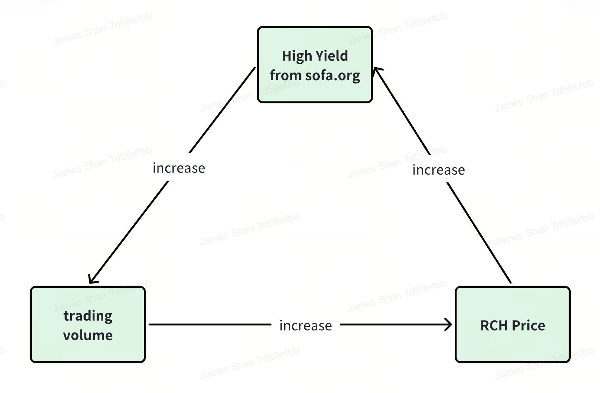

Hypothetisches $RCH Float-Szenario (LP + kumulative Airdrops)
Basissannahmen
- 0,02% Protokoll-Servicegebühr, 1.000.000 USDT in der Protokoll-TVL am Tag 1 mit 2% täglichem Wachstum, 12,5k in täglichen nominalen $RCH-Airdrops mit 50% zurück in den LP-Pool verkauft

Positive Reflexivität mit selbstkorrigierenden Abwärtsanpassungen

Angesichts seines deflationären Angebotsmodells sollten erhöhte Protokolltransaktionen zu einem höheren $RCH-Preis führen. Mit steigendem Preis des Utility-Tokens steigt auch der Wert der bevorstehenden Airdrops, was zusätzliche Transaktionen fördert und einen positiven Feedback-Loop für das gesamte Ökosystem schafft.
Andererseits, sollte der Tokenpreis aus irgendeinem Grund drastisch fallen, werden die USDT-basierten Protokolltransaktionsgebühren in der Lage sein, eine größere Menge an $RCH-Tokens aus den täglichen Rückkaufoperationen zu verbrennen. Dies dient als starke, selbstkorrigierende Anpassung zur Stabilisierung des Tokenpreises, bis die täglichen Transaktionen aufholen können, um ein Nettoangebotdefizit wiederherzustellen und die Aufwärtsbewegung des $RCH-Preises neu zu starten.
Keine Exit-Liquiditätsdumpings
Aus den Erfahrungen früherer Projekte lernend, wird der faire Launch-Mechanismus von $RCH alle negativen 'Cliff-Vesting'-Auswirkungen oder Insider-Liquiditätsdumpings beseitigen, da keine Partei bei der Einführung Anspruch auf $RCH hat. Darüber hinaus ist die anfängliche Liquidität des Utility-Tokens gesperrt und kann von seinen Beitragszahlern nicht abgehoben werden, was ein Mindestmaß an Liquidität unabhängig von den Marktentwicklungen gewährleistet. Schließlich sollte dies, solange Protokolltransaktionen weiterhin stattfinden, eine netto deflationäre Angebotsauswirkung auf $RCH haben, was dem Tokenpreis einen sehr starken Rückenwind für die Zukunft verleiht.
Unendlich skalierbares Ökosystem

In der Zukunft kann sich jedes aufstrebende DeFi-Projekt, das die Standards von SOFA.org erfüllt, als Protokollpartner dem Ökosystem anschließen.
Vorteile des Beitritts zum Ökosystem
- Empfehlung durch SOFA.org als DeFi-Projekt, das die dezentralen Werte und das Design der Vereinigung beobachtet und aufrechterhält, was einen beschleunigten Weg zur Verbindung mit dem Rest des SOFA-Ökosystems darstellt.
- Transaktionen innerhalb des größeren SOFA-Ökosystems qualifizieren sich ebenfalls für die täglichen $RCH-Airdrops.
Voraussetzungen für den Beitritt zum Ökosystem
- Einhaltung der wahren DeFi-Standards: Projekte müssen die von SOFA.org festgelegten wahren DeFi-Standards erfüllen, um das kontinuierliche Wachstum der Dezentralisierungsmission zu unterstützen.
- Zuweisung von Gebühren zur Verbrennung des nativen Tokens: Projekte sollten alle oder einen Teil ihrer Transaktionsgebühren zur Verbrennung des $RCH-Tokens verwenden, um zum deflationären Mechanismus beizutragen und den Wertzuwachs für unsere treuen Nutzer zu beschleunigen.
- Genehmigung durch kollektive Abstimmung der $SOFA-Inhaber: Projekte müssen durch einen kollektiven Abstimmungsprozess der $SOFA-Token-Inhaber genehmigt werden, um dem Ökosystem beizutreten, als eine Form der Gemeinschaftsunterstützung.
Wenn mehr Protokolle dem SOFA.org-Ökosystem beitreten, werden mehr Transaktionsgebühren für Token-Rückkäufe zugewiesen, was tiefgreifende Gewinne für unsere Token-Inhaber schafft. Gleichzeitig hätten wir auch neue Wege gefunden, wie digitale Vermögenswerte on-chain abgerechnet werden können, während wir eine robuste Dreipartei-Lösung zur Minderung von Gegenparteirisiken sowohl auf DeFi- als auch auf CeFi-Plattformen anbieten.